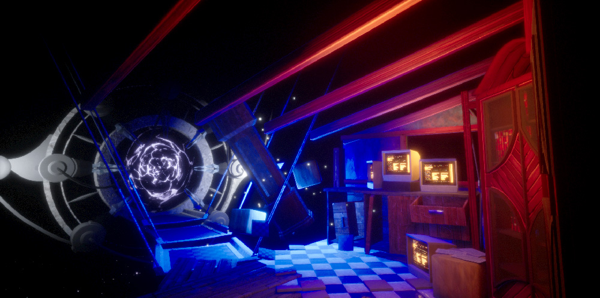
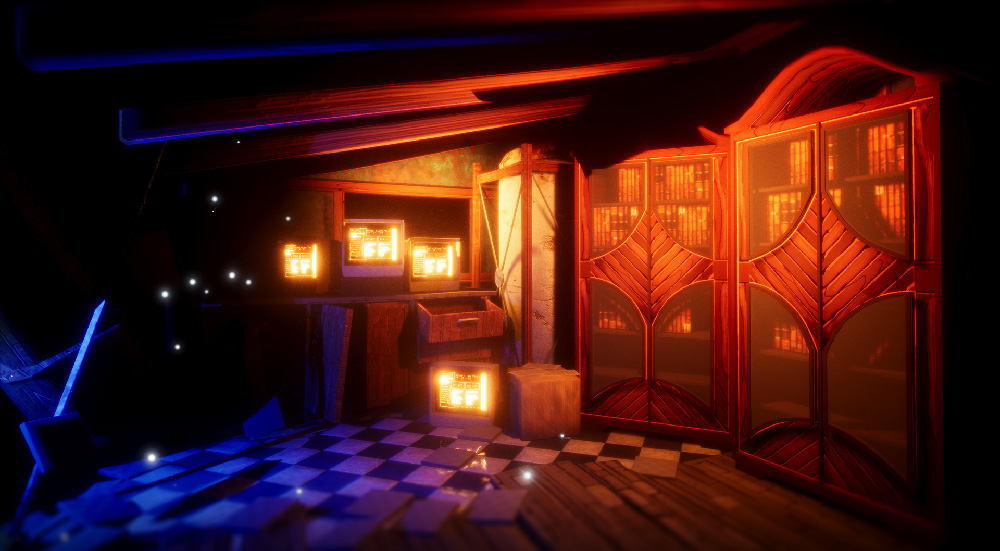
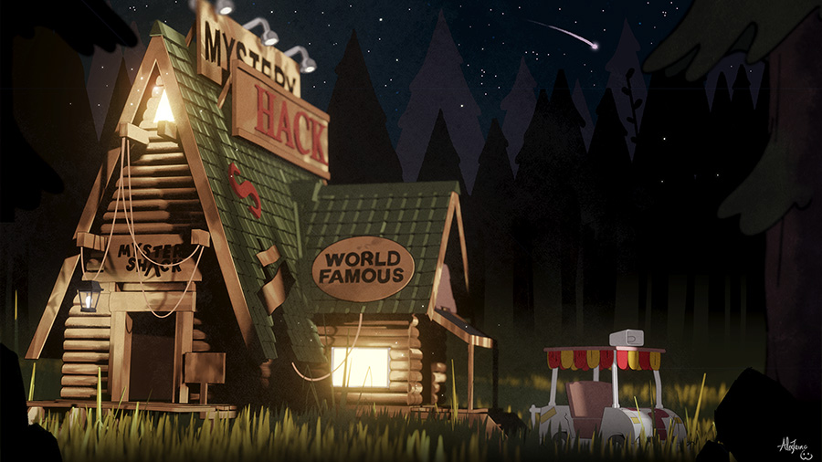
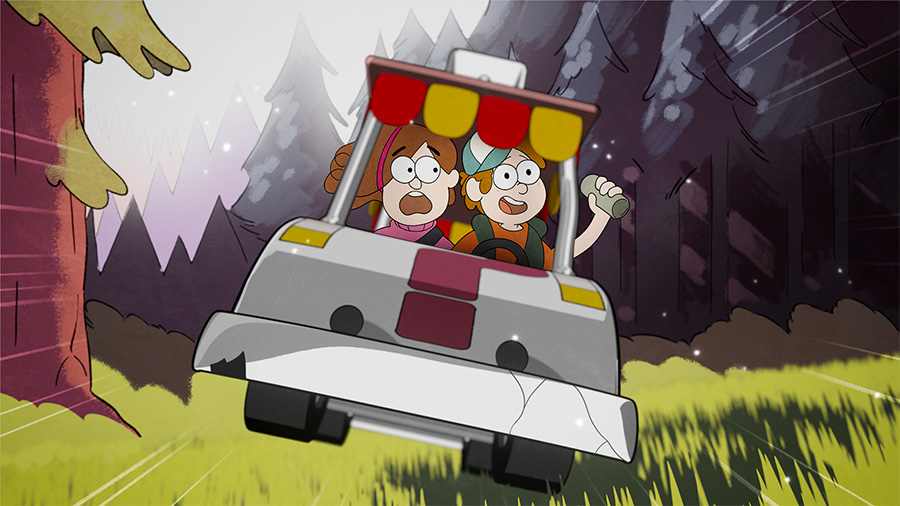
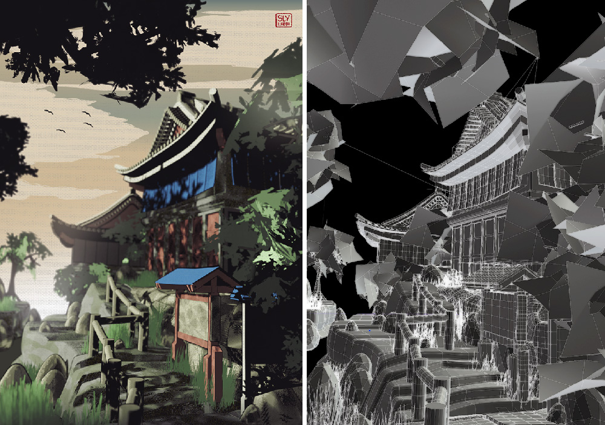

Sly
Three Dee Work
I've been trying to keep up with a variety of 3D modelling work recently. In fact I've been pretty inspired by Guild Wars 2; being with friends in such a beautiful three-dimensional third place (virtually speaking) is so compelling that it makes one want to produce virtual urban space for oneself (even if one is very clumsy at it). Here are a couple of pieces from this year, and you can find some more on cohost.
 This is an April '23 work which I'm (somehow) not too unhappy with. It's made in UE5 to be dynamic; you can wander around it and see how the light changes and shifts. The main thing this one taught me is how hard it is to work in real-time 3D!
 These were the first pieces I made at the beginning of this year! I was a lot more motivated back then. The interesting component to these ones is that they use entirely procedural textures as opposed to raster diffuse images. These textures take the light quality projected onto the shape and use it in their calculations, making for warm and responsive material qualities.
This piece was a real learning curve - it used some more complex shaders to handle cross-hatching and organic textures. And it's still not right! I think it's lacking in consistent greenery, something I'd spruce up if I were to do it again.
That's all for now; thanks for taking a look! Once again you can check out more process stuff on cohost which I'll try and keep up to date. I've also been doing some exciting work involving laying out environments for comics... but I have to keep that under wraps for now!